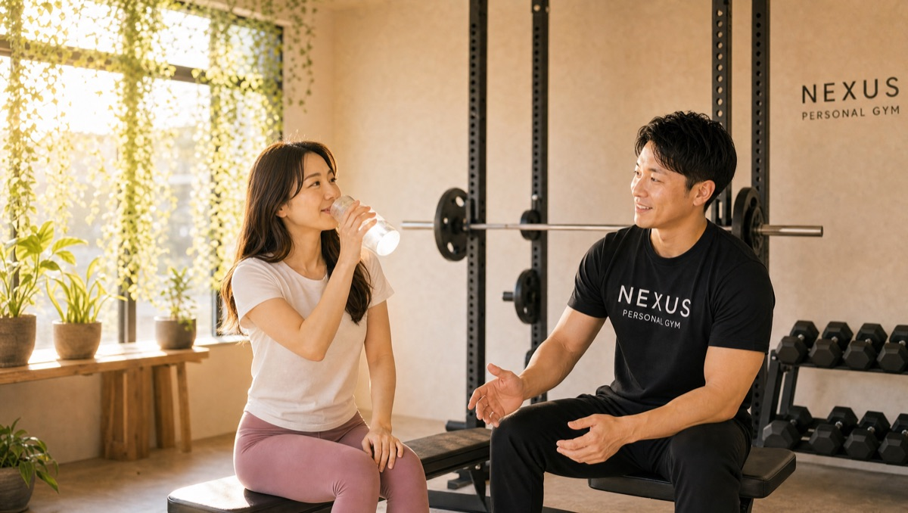
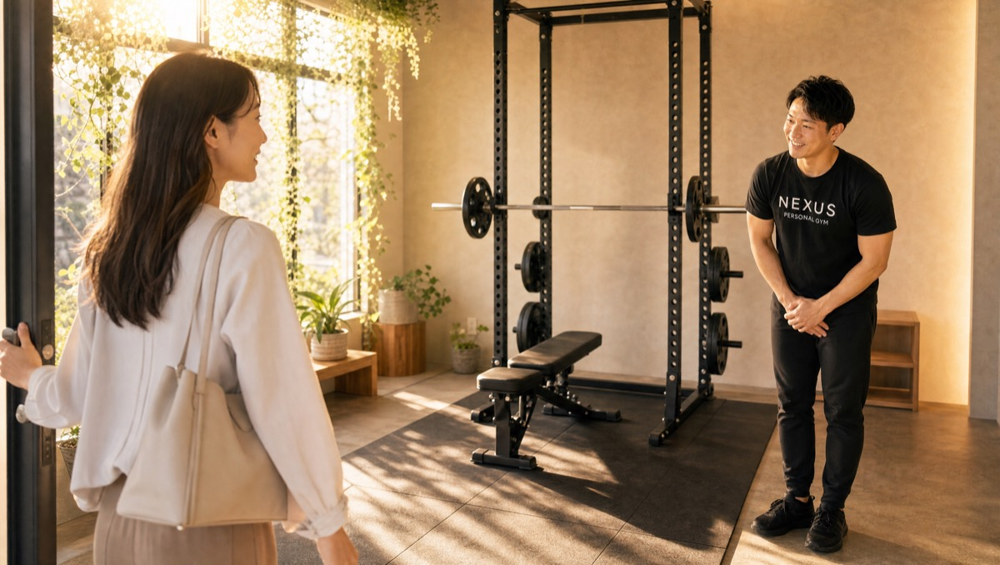

NEXUS Personal Gym ／ 大阪府大阪市福島区
NEXUSパーソナルジム 大阪福島店｜福島・梅田西の完全個室・隠れ家ジム
大阪市福島区福島の完全個室パーソナルジムです（福島県ではなく、大阪市福島区にあります）。JR福島駅すぐ・梅田からも徒歩圏。「人生の晴れの日に間に合わせるボディメイク」を軸に、ご家族の結婚式に向けた20kg減量成功など、人生の節目に間に合わせる指導が支持され、Google口コミ★4.9（102件）をいただいています。
- 完全個室
- 晴れの日ボディメイク
- JR福島駅すぐ・梅田西
- 毎日8:00〜23:00
- 手ぶら通いOK

この店舗の特徴
NEXUS大阪福島店は、大阪市福島区福島にある完全個室パーソナルジム。JR福島駅からすぐ、梅田からも徒歩圏という好立地で、「ここぞという日に、一番いい姿で臨みたい」という大人の方に選ばれています。娘さんの結婚式、久しぶりの同窓会、還暦の記念写真——人生には、期日の決まった晴れ舞台があります。大阪福島店は、その日から逆算して現実的に間に合わせるボディメイクを得意としています。ウェア・タオル・プロテインまで無料提供の手ぶら通いOK、毎日8:00〜23:00営業で、朝の出勤前から夜の仕事帰りまで通えます。料金は1回4,500円〜（ライトコース30分・月4回18,000円）から始められます。
晴れの日から逆算する身体づくり
大阪福島店の一番の強みは、「期日のある目標」に間に合わせる力です。実際に、「娘の結婚式に向けて減量を始め、20kgの減量に成功した。当日は久しぶりに会う親族や友人に『痩せたね！』と言われた」という会員の実話があります。ゴールの日が決まっているからこそ、逆算が効きます。残りの期間・現在の体型・生活リズムをうかがい、いつまでに何キロ、そのために毎週どう動き何を食べるかを具体的に設計。無理な追い込みで途中で挫折しないよう、続けられるペースに落とし込みます。お子さまやお孫さんの結婚式、同窓会、記念写真——あなたの「その日」を教えてください。一番いい姿で迎えるための道筋を、一緒に引きます。
娘の結婚式に向けて減量を始め、20kgの減量に成功しました。厳しい制限もなく、楽しく続けられたのが良かったです。
猫背が直ると、写真が好きになる

晴れの日を彩るのは、体重だけではありません。立ち姿や姿勢は、写真の印象を大きく左右します。大阪福島店の口コミには「猫背で写真に写るのが嫌いだったが、自然に背筋が伸びるようになった」という声があります。デスクワークで丸まった背中も、肩甲骨まわりや体幹を正しく使えるようになると、意識しなくても自然と伸びていきます。記念写真やスナップに写る自分が好きになる——姿勢が変わると、そんな変化が生まれます。減量と並行して、立ち姿から美しく整えていきましょう。
2ヶ月で姿勢が変わり、猫背だった背中が自然に伸びるようになりました。朝トレのおかげで仕事前の気分もすっきりです。
厳しい食事制限なしで20kg
「20kg減量」と聞くと、つらい食事制限を想像するかもしれません。でも大阪福島店の会員は、口コミで「無理な制限なく楽しく続けて減量できた」と語っています。極端に食べないダイエットは、リバウンドと隣り合わせ。だからこそ、何を減らすかより「何をどう食べるか」を整えることを大切にします。写真を送るだけのAI食事指導（月額3,000円・税込）を使えば、日々の食事に具体的なアドバイスが届き、自炊でも外食でも続けやすくなります。我慢だけに頼らず、晴れの日まで無理なく体を絞っていきます。
朝8時、出勤前の福島トレ

大阪福島店は毎日8:00〜23:00営業。梅田まで徒歩圏、JR福島駅すぐという立地を活かして、朝8時に出勤前のトレーニングをしてから梅田のオフィスへ向かう「朝トレ」で通う会員が多いのも特徴です。口コミでも「仕事前の朝トレで気分もすっきり」という声をいただいています。朝に体を動かすと、頭が冴え、一日のスイッチが入る。忙しくて夜は予定が読めないという方も、始業前の時間なら習慣にしやすいものです。もちろん夜は23時まで対応しているので、残業後の締めのトレーニングにも使えます。
無料体験の流れ

初めての方は、まず無料体験へ。ご予約後、来店したらカウンセリングで目標の日（結婚式・同窓会・記念写真など）や現在の体型、生活リズム、運動歴をうかがいます。そのうえで実際のトレーニングを体験し、フォームや効かせ方を確かめていただきます。相性や雰囲気を確かめてから決めていただけるので、当日入会で入会金が通常55,000円→15,000円（税込）に割引。無理な勧誘は一切ありません。JR福島駅すぐ・梅田西なので、仕事帰りやお出かけのついでに、まずは話だけでも気軽にお越しください。
料金プラン
入会金は通常55,000円、無料体験当日入会で15,000円（税込）に割引。AI食事指導は月額3,000円（税込）。全店舗共通の料金です。
アクセス
- 店舗名
- NEXUSパーソナルジム 大阪福島店
- 住所
- 〒553-0003
大阪府大阪市福島区福島6-16-9 エミネンス梅田西201号 - 最寄り駅
- JR福島駅／阪神本線 福島駅（梅田まで徒歩圏）
- 営業時間
- 毎日 8:00〜23:00
- 電話番号
- 050-1790-8496
Google口コミ★4.9（102件）
NEXUS大阪福島店はGoogle口コミ★4.9・102件。ご家族の結婚式に向けた20kg減量成功など、人生の節目に間に合わせる指導が評価されています。
※お客様の声はGoogle口コミの内容を要約して掲載しています。出典：Google マップ
自己流で不安だったフォームを細かく指導してもらい、意識ひとつで効き方が変わることに驚きました。
大阪福島店のよくある質問
Q大阪市福島区で完全個室のパーソナルジムはありますか？+
Q子どもの結婚式まで数ヶ月です。間に合いますか？+
Q出勤前の朝でも通えますか？+
よくある質問（全店共通）
料金・制度などNEXUS全店に共通するご質問です。さらに詳しくは110問のFAQをご覧ください。
Q料金はいくらですか？+
Q手ぶらで通えますか？+
Qキャンセルはいつまでできますか？+
Q食事指導はありますか？+
Qトレーナーはどんな人ですか？+
NEXUSパーソナルジム公式サイトを見る